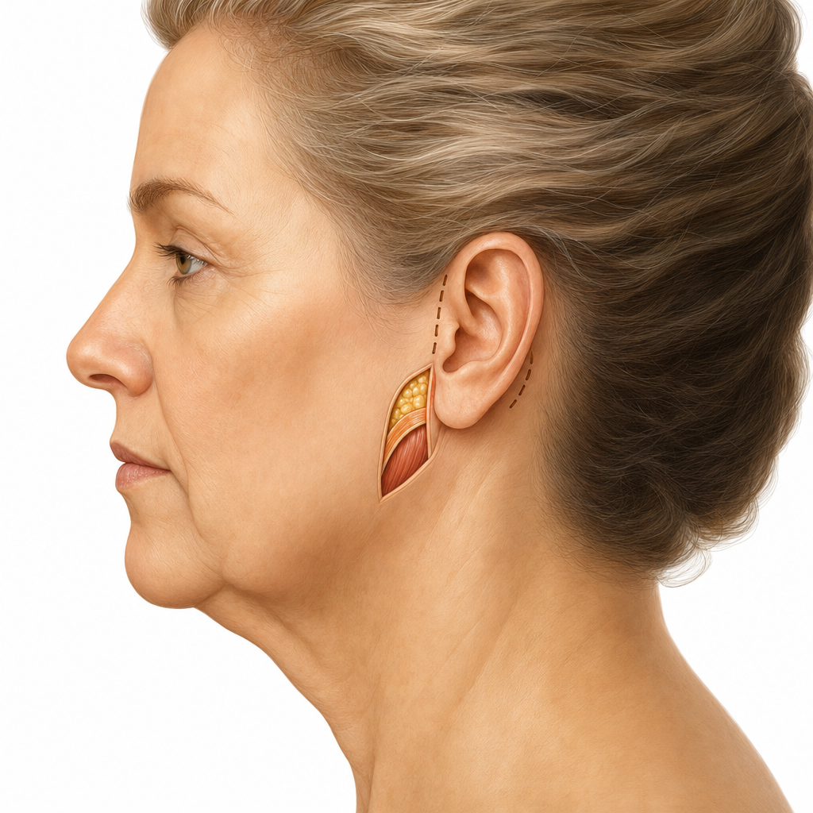
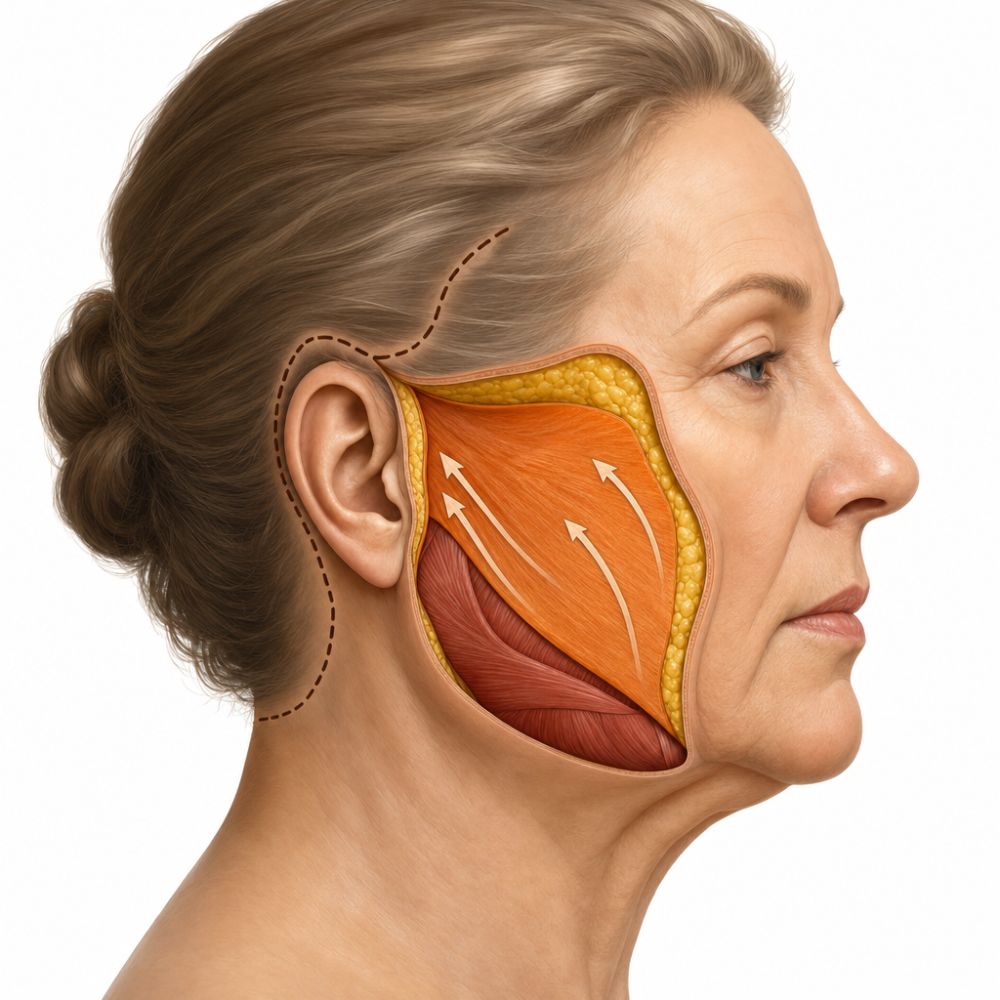
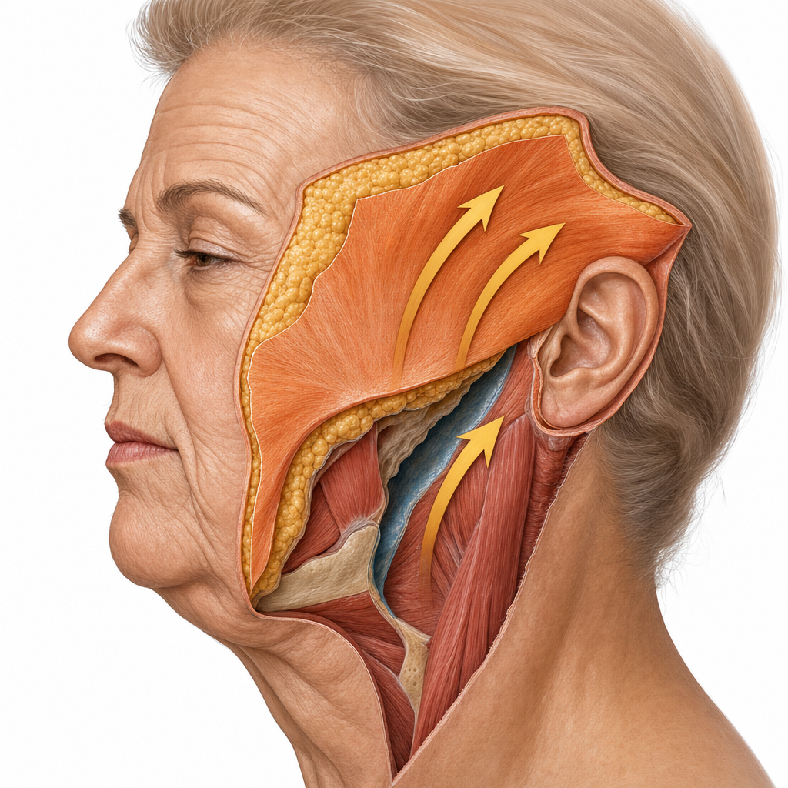

Schluss mit dem Spiegelbild, das nicht mehr zu Ihnen passt: Erfahren Sie, wie ein individuell geplantes SMAS-Facelift zu einem natürlich verjüngten Aussehen verhelfen kann — ohne Maskeneffekt.
Termin online in 2 Minuten buchen · Rückmeldung innerhalb von 24h · 100% vertraulich
"Ich sehe 10 Jahre jünger aus — aber immer noch wie ich selbst. Kein Maskeneffekt, kein künstliches Aussehen. Einfach frischer, wacher, lebendiger."
Lernen Sie unser Team kennen — in 2 Minuten
Auf Fotos sehen Sie sich — und erkennen sich nicht. Videokonferenzen vermeiden Sie, wenn möglich. Bei Treffen mit alten Freunden denken Sie: Sehen die auch, was ich sehe? Hängende Wangen, ein erschlaffter Hals, Falten, die tiefer werden. Ihr Gesicht erzählt eine Geschichte, die nicht mehr zu Ihnen passt.
Innerlich fühlen Sie sich jung und vital — aber der Spiegel zeigt etwas anderes. Cremes und Seren reichen nicht mehr. Filler und Botox sind nur noch kurzfristige Pflaster. Sie spüren seit langem, dass es Zeit ist für eine Lösung, die wirklich hält — die in die Tiefe geht, nicht nur an der Oberfläche kratzt.
Was Sie zurückhält? Die Angst, danach „anders" auszusehen. Der gefürchtete Maskeneffekt. Das gespannte, künstliche Aussehen, das man bei manchen sieht. Genau deshalb gibt es das SMAS-Facelift: Es strafft nicht nur die Haut, sondern das darunterliegende Muskel- und Bindegewebe. Ihre natürliche Gesichtsform wird wiederhergestellt — nicht verzerrt.
Mehr Menschen empfinden so, als Sie denken. Und fast alle sagen nach dem Eingriff dasselbe: „Warum habe ich so lange gewartet?"
„Meine Kollegen dachten, ich sei müde oder gestresst — dabei fühlte ich mich großartig. Mein Gesicht zeigte einfach nicht mehr, wie ich mich fühlte. Ich habe Fotos vermieden, Videokonferenzen gehasst. Nach dem SMAS-Facelift sagten alle: ‚Du siehst so erholt aus!' Niemand hat die OP bemerkt."
100% unverbindlich. Kein Risiko. Kein Druck.
Natürlich verjüngt, individuell geplant — für ein Ergebnis ohne Maskeneffekt.
Beratungstermin vereinbaren →✓ Narbenarm · ✓ Natürliches Ergebnis · ✓ 10–15 Jahre Wirkung
Das SMAS-Facelift (Superficial Musculo Aponeurotic System) ist die fortschrittlichste Methode der operativen Gesichtsverjüngung. Anders als oberflächliche Straffungen behandelt es die tieferen Gewebeschichten — Muskulatur und Bindegewebe — unter der Haut. Das Ergebnis: eine natürliche, langanhaltende Verjüngung ohne Maskeneffekt.
Im 60-minütigen Beratungsgespräch zeigen wir Ihnen Vorher-Nachher-Bilder vergleichbarer Fälle und empfehlen ehrlich, welche Methode — Mini, SMAS oder Deep Plane — das beste Ergebnis für Ihren individuellen Fall bringt.
Im ausführlichen Erstgespräch analysieren wir Ihren Hautzustand, Ihre Gesichtsanatomie und besprechen Ihre persönlichen Wünsche. Wo stört Sie die Erschlaffung am meisten? Wangen, Kinn, Hals? Welches Ergebnis schwebt Ihnen vor? Wir zeigen Ihnen Vorher-Nachher-Bilder vergleichbarer Fälle, damit Sie ein realistisches Gefühl für die Veränderung bekommen.
Gemeinsam klären wir, ob ein Mini-Facelift, ein SMAS-Facelift oder ein Deep Plane Facelift den besten Weg zu Ihrem Ziel darstellt — und ob eine Kombination mit Hals- oder Lidstraffung sinnvoll ist.
→ Sie wissen danach genau, welche Methode zu Ihnen passt und welches Ergebnis realistisch erwartet werden kann.
Basierend auf Ihrer Gesichtsanatomie planen wir den Eingriff bis ins Detail: Schnittführung (hinter den Ohren, entlang des Haaransatzes), Straffungsrichtung und -tiefe, mögliche Kombinationseingriffe. Jedes Facelift ist so individuell wie das Gesicht, das es verjüngen soll.
Die SMAS-Technik repositioniert die tiefe Muskel-Bindegewebs-Schicht unter der Haut — genau das verhindert den gefürchteten Maskeneffekt. Die Haut wird nicht gespannt, sondern legt sich natürlich über das gestraffte Fundament. Das Ergebnis: Sie sehen frischer aus, aber immer noch wie Sie selbst.
→ Ein maßgeschneiderter Plan für Ihr Gesicht — mit dem Ziel einer natürlichen Verjüngung ohne künstliches Aussehen.
In Vollnarkose oder Dämmerschlaf repositioniert unser Ärzteteam die tiefe SMAS-Gewebeschicht und strafft anschließend die Haut. Die Schnitte verlaufen versteckt hinter den Ohren und am Haaransatz — so platziert, dass sie nach der Heilung selbst bei kurzem Haar nicht auffallen.
Bei Bedarf wird gleichzeitig eine Halsstraffung, Lidstraffung oder ein Stirnlift durchgeführt. Unser Team arbeitet mit äußerster Präzision, um Nerven zu schonen, die natürliche Mimik zu erhalten und ein harmonisches Gesamtergebnis zu erzielen.
→ Versteckte Schnitte, natürliche Repositionierung, erhaltene Mimik — für ein Ergebnis, das niemand als OP erkennt.
Nach dem Eingriff bleiben Sie eine Nacht in unserer Belegklinik. Verband und optimale Wundversorgung werden angelegt. Unser Team ist 24 Stunden erreichbar — für Ihre Sicherheit und Ihr gutes Gefühl.
Gesellschaftsfähig sind die meisten Patienten nach 5–10 Tagen. Leichte Schwellungen und Blutergüsse klingen in 2–3 Wochen ab. Sport ist nach ca. 3 Wochen wieder möglich. Die meisten nehmen sich eine Woche frei — danach sagen Freunde und Kollegen: „Du siehst so erholt aus!"
→ Persönliche Betreuung, klare Zeitplanung — und schneller zurück im Alltag, als viele denken.
Das Ergebnis eines SMAS-Facelifts wird über Wochen immer besser, während Schwellungen abklingen und die endgültige Form entsteht. Narben verblassen und werden mit richtiger Pflege schnell unauffällig. Ihre natürlichen Gesichtszüge bleiben vollständig erhalten — kein Maskeneffekt, keine verzerrte Mimik.
Weil das SMAS-Facelift in die tiefe Gewebeschicht geht (nicht nur die Hautoberfläche), hält das Ergebnis deutlich länger als andere Methoden: typischerweise 10–15 Jahre. Regelmäßige Nachsorge-Termine begleiten Ihre Heilung und stellen sicher, dass alles optimal verläuft.
→ Natürlich verjüngt, dauerhaft erholt — Sie selbst, nur frischer, wacher und selbstbewusster.
Welche Facelift-Methode zu Ihnen passt, klären wir gemeinsam im Beratungsgespräch.
Je nach Alter, Hautzustand und Wünschen empfehlen wir die optimale Methode. Im Beratungsgespräch finden wir gemeinsam die beste Lösung.

Zwei kleine Schnitte hinter den Ohren. Ideal bei ersten Alterserscheinungen: leichte Hängebäckchen, beginnende Wangenerschlaffung. Weniger invasiv, schnellere Heilung, große Wirkung. Oft ambulant möglich.
Leichte bis mittlere Erschlaffung
Zwei-Schichten-Technik: Haut und darunterliegendes Muskel-Bindegewebe werden gestrafft. Für fortgeschrittene Erschlaffung, Jowls, Halserschlaffung. Das natürlichste und langanhaltendste Ergebnis. 2–3 Stunden, 1 Nacht Klinik.
★ Beliebteste Methode
Noch tiefere Gewebeschichten werden mobilisiert als beim SMAS. Für besonders ausgeprägte Erschlaffung der Gesichts- und Halspartie. Maximale Verjüngung bei gleichzeitig natürlichem Ergebnis.
Starke ErschlaffungVilla Bella bietet beide Wege — und berät Sie ehrlich, welcher zu Ihnen passt.
Unsere Empfehlung: Im 60-minütigen Beratungsgespräch zeigen wir Ihnen Vorher-Nachher-Bilder beider Methoden und empfehlen ehrlich, welcher Weg für Ihren individuellen Fall das beste Ergebnis bringt. Viele Patienten kombinieren auch beide Methoden.
Operativ, Laser oder Kombination — in 60 Minuten finden wir gemeinsam die Antwort. Ehrlich, individuell, ohne Druck.
Mein Beratungsgespräch sichern →✓ Unverbindlich · ✓ Absolut diskret · ✓ Vorher-Nachher-Vergleich
Ein Facelift ist die persönlichste aller Operationen. Vergleichen Sie selbst.
Die vier häufigsten Bedenken — und ehrliche Antworten darauf.
Genau das verhindert die SMAS-Technik. Weil nicht nur die Haut gespannt wird, sondern die darunterliegende Gewebeschicht repositioniert wird, bleibt Ihr natürlicher Gesichtsausdruck erhalten. Kein Maskeneffekt. Ihre Mimik bleibt lebendig.
Die Kosten richten sich nach Umfang und Methode (Mini, SMAS, Deep Plane). Im Beratungsgespräch erhalten Sie eine transparente Aufstellung nach GOÄ. Bedenken Sie: Ein SMAS-Facelift hält 10–15 Jahre — eine Investition in Jahrzehnte.
Die Schnitte verlaufen hinter den Ohren und entlang des Haaransatzes — nach der Heilung im Regelfall sehr unauffällig. Selbst bei kurzem Haar fallen sie nicht auf. Mit richtiger Pflege verblassen sie schnell.
Gesellschaftsfähig nach 5–10 Tagen. Die meisten Patienten nehmen sich eine Woche frei. Leichte Schwellungen klingen in 2–3 Wochen ab. Sport nach ca. 3 Wochen. Das Ergebnis wird über Monate immer besser.
Unverbindlich, persönlich, ohne Zeitdruck

Ein Facelift ist Kunst und Chirurgie zugleich. In der Villa Bella steht hinter Ihrem Ergebnis ein eingespieltes Team aus spezialisierten Fachärztinnen und Fachärzten — nicht ein einzelner Arzt.
Dr. Ludger Meyer-Dobbelstein, Facharzt für Plastische Chirurgie und Gründer der Villa Bella, hat mit über 24.000 durchgeführten Operationen die Techniken seines Teams geprägt und perfektioniert. Sein Team verbindet jahrzehntelange operative Erfahrung mit modernster Technologie.
Ein Blick hinter die Kulissen — erleben Sie den Spirit unserer Klinik, unser Team und unseren Anspruch in 2 Minuten.
Natürlich verjüngt, individuell geplant — für ein Ergebnis, das zu Ihnen passt.
Mein Beratungsgespräch sichern →Unverbindlich & absolut diskret
Von der ersten Beratung bis zum Moment, in dem andere fragen: „Was hast du gemacht? Du siehst so erholt aus!"
In entspannter Atmosphäre besprechen wir Ihre Wünsche, analysieren Ihren Hautzustand und zeigen Ihnen Vorher-Nachher-Bilder. Gemeinsam definieren wir die optimale Methode. Unverbindlich.
Basierend auf Ihrer Gesichtsanatomie planen wir den Eingriff bis ins Detail: Schnittführung, Straffungsrichtung, mögliche Kombinationen (Hals, Lider). Jedes Facelift ist individuell.
In Vollnarkose oder Dämmerschlaf. Das SMAS-Facelift repositioniert die tiefe Gewebeschicht und strafft die Haut. Schnitte hinter den Ohren / am Haaransatz — präzise, narbensparend.
Nach dem Eingriff bleiben Sie eine Nacht in unserer Belegklinik. 24h-Erreichbarkeit unseres Teams. Verband und optimale Wundversorgung.
Gesellschaftsfähig nach 5–10 Tagen. Leichte Schwellungen und Blutergüsse klingen in 2–3 Wochen ab. Sport nach ca. 3 Wochen.
Das Ergebnis wird über Wochen immer besser. Regelmäßige Nachsorgetermine begleiten Ihre Heilung. Das Endresultat: Sie selbst — nur frischer, wacher, jünger.
Es strafft nicht nur die Hautoberfläche, sondern das darunterliegende Muskel-Bindegewebs-System (SMAS). Diese tiefere Schicht gibt der Haut ihr Fundament — wird sie repositioniert, hält das Ergebnis 10–15 Jahre. Oberflächliche Methoden halten dagegen nur wenige Jahre.
→ Mehr erfahren im BeratungsgesprächDas Mini-Facelift ist ideal bei ersten Alterserscheinungen und noch jüngerer Haut: leichte Hängebäckchen, beginnende Wangenerschlaffung, hängende Mundwinkel. Zwei kleine Schnitte hinter den Ohren, oft ambulant möglich, schnellere Heilung. Für ausgeprägtere Erschlaffung empfehlen wir das SMAS-Facelift.
→ Herausfinden welche Methode zu mir passtDie Schnitte verlaufen hinter den Ohren und/oder entlang des Haaransatzes. Sie sind so platziert, dass sie nach der Heilung im Regelfall sehr unauffällig sind — selbst bei kurzem Haar. Mit richtiger Pflege verblassen sie schnell.
→ Mehr über die Schnittführung erfahrenJa! Am häufigsten wird ein Facelift mit einer Halsstraffung oder Lidstraffung kombiniert — für ein harmonisches Gesamtergebnis. Auch Stirnlift, Augenbrauen-Lift oder Laser-Behandlungen einzelner Partien (z.B. Lippenfältchen) sind möglich.
→ Kombinationsmöglichkeiten besprechenLeichte bis mittlere Alterserscheinungen (feine Falten, Hautbild, Poren): Laser-Facelift. Deutliche Erschlaffung (Jowls, Halserschlaffung, abgesunkene Wangen): Operatives Facelift. Viele Patienten kombinieren beide Methoden. Im Beratungsgespräch empfehlen wir ehrlich den besten Weg.
→ Mehr zum Laser-Facelift erfahrenDie Kosten variieren nach Methode und Umfang. Transparente Aufstellung nach GOÄ im Beratungsgespräch — keine versteckten Kosten. Bedenken Sie: Ein SMAS-Facelift hält 10–15 Jahre.
→ Individuelles Kostenangebot erhaltenDie Erstberatung kostet 90 €. Bei Buchung einer Behandlung wird dieser Betrag vollständig verrechnet. So stellen wir sicher, dass wir uns ausreichend Zeit für Sie nehmen können — ohne Zeitdruck, individuell und diskret.
→ Beratungstermin vereinbarenFüllen Sie das kurze Formular aus — wir melden uns innerhalb von 24 Stunden. Unverbindlich, absolut diskret.
Unser Team meldet sich innerhalb von 24 Stunden persönlich bei Ihnen.
Sie können uns auch direkt erreichen: +49 (0)89 217549430